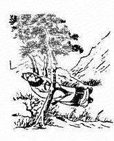
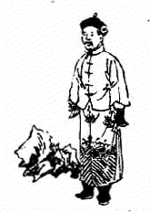
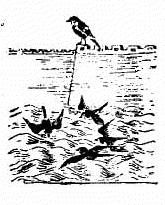
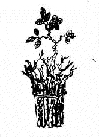
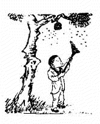
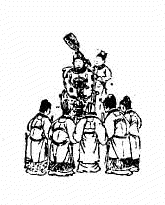
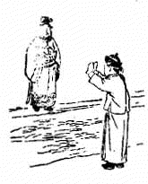
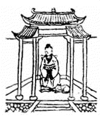
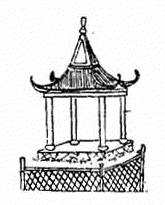
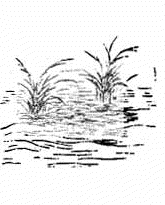

1. 11 甲戌 ䷻ 兑下坎上 节 1.1. 讖曰 1.2. 頌曰 1.3. 金聖歎 2. 12 乙亥 ䷂ 震下坎上 屯 2.1. 讖曰 2.2. 頌曰 2.3. 金聖歎 3. 13 丙子 ䷾ 离下坎上 既济 3.1. 讖曰 3.2. 頌曰 3.3. 金聖歎 4. 14 丁丑 ䷰ 离下兑上 革 4.1. 讖曰 4.2. 頌曰 4.3. 金聖歎 5. 15 戊寅 ䷶ 离下震上 丰 5.1. 讖曰 5.2. 頌曰 5.3. 金聖歎 6. 16 己卯 ䷣ 离下坤上 明夷 6.1. 讖曰 6.2. 頌曰 6.3. 金聖歎 7. 17 庚辰 ䷆ 坎下坤上 师 7.1. 讖曰 7.2. 頌曰 7.3. 金聖歎 8. 18 辛巳 ䷳ 根下根上 山 8.1. 讖曰 8.2. 頌曰 8.3. 金聖歎 9. 19 壬午 ䷕ 离下根上 贲 9.1. 讖曰 9.2. 頌曰 9.3. 金聖歎 10. 20 癸未 ䷌ 离下乾上 同人 10.1. 讖曰 10.2. 頌曰 10.3. 金聖歎 1. 11 甲戌 ䷻ 兑下坎上 节 1.1. 讖曰 五人同卜 非禄非福 兼而言之 喜怒哀乐 1.2. 頌曰 龙蛇相斗三十年 一日同光直上天 上得天堂好游戏 东兵百万入秦川 1.3. 金聖歎 「此象主伶人郭从谦作乱，唐主为流矢所中。」  2. 12 乙亥 ䷂ 震下坎上 屯 2.1. 讖曰 块然一石 谓他人父 统二八州 已非唐土 2.2. 頌曰 反兆先多口 出入皆无主 繫铃自解铃 父亡子亦死 2.3. 金聖歎 「此象主石敬塘求救于契丹。 唐主遣张敬达讨石敬塘，敬塘不得已，求救于契丹，事之以父礼，贿之以幽蓟十六州。 晋帝之立国契丹功也，然卒以契丹亡，故有繫铃解铃之兆。」  3. 13 丙子 ䷾ 离下坎上 既济 3.1. 讖曰 汉水竭 雀高飞 飞来飞去何所止 高山不及城郭低 3.2. 頌曰 百个雀儿水上飞 九十九个过山西 惟有一个踏破足 高栖独自理毛衣 3.3. 金聖歎 「此象主周主郭威夺汉自立。郭威少贱，世称之曰郭雀儿。」  4. 14 丁丑 ䷰ 离下兑上 革 4.1. 讖曰 李树得根芽 石榴漫放花 枯木逢春纸一瞬 让他天下竞荣华 4.2. 頌曰 金木水火土已终 十三童子五王公 英明重见太平日 五十三参运不通 4.3. 金聖歎 「此象主周世宗承郭威受命为五代之终，世宗姓柴名荣，英明武断，勤于为治， 惜功业未竟而殂。五代共五十三年，凡八姓十三主，颂意显然。」  5. 15 戊寅 ䷶ 离下震上 丰 5.1. 讖曰 天有日月 地有山川 海内纷纷 父后子前 5.2. 頌曰 战事中原迄未休 几人高枕卧金戈 环中自有真天子 扫尽群妖见日头 5.3. 金聖歎 「此象主五代末造，割据者星罗棋布，惟吴越钱氏〈钱鏐四世〉稍图治安， 南唐李氏〈李昪三世〉略知文物，馀悉淫乱昏虐。 太祖掘起，拯民水火。太祖小名香孩儿，手执帚者，扫除群雄也。」  6. 16 己卯 ䷣ 离下坤上 明夷 6.1. 讖曰 天一生水 姿禀圣武 顺天应人 无今无古 6.2. 頌曰 纳土姓钱并姓李 其馀相次朝天子 天将一统付真人 不杀人民更全嗣 6.3. 金聖歎 「此象主宋太祖受禅汴都，天下大定，钱李二氏相率归化，此一治也。」  7. 17 庚辰 ䷆ 坎下坤上 师 7.1. 讖曰 声赫赫 干戈息 扫边氛 奠邦邑 7.2. 頌曰 天子亲征乍渡河 欢声百里起讴歌 运筹幸有完全女 奏得奇功在议和 7.3. 金聖歎 「此象主真宗澶渊之役。 景德元年，契丹大举入寇，寇准劝帝亲征，乃幸澶渊。 既渡河，远近望见御盖皆踊跃呼万岁，声闻数十里，契丹夺气，遂议和。」  8. 18 辛巳 ䷳ 根下根上 山 8.1. 讖曰 天下之母 金刀伏兔 三八之年 治安巩固 8.2. 頌曰 水旱频仍不是灾 力扶幼主镇埏垓 朝中又见钗光照 宇内承平气象开 8.3. 金聖歎 「此象主仁宗嗣立，刘太后垂帘听政。旁有一犬，其惟狄青乎。」  9. 19 壬午 ䷕ 离下根上 贲 9.1. 讖曰 众人嚚嚚 尽入其室 百万雄师 头上一石 9.2. 頌曰 朝用奇谋夕丧师 人民西北尽流离 韶华虽好春光老 悔不深居坐殿墀 9.3. 金聖歎 「此象主神宗误用安石，引用群邪，致啓边衅，用兵西北，丧师百万。 熙宁初，王韶上平戎三策，安石惊为奇谋，力荐于神宗，致肇此祸。」  10. 20 癸未 ䷌ 离下乾上 同人 10.1. 讖曰 朝无光 日月盲 莫与京 终旁皇 10.2. 頌曰 父子同心并同道 中天日月手中物 奇云翻过北海头 凤阙龙廷生怛恻 10.3. 金聖歎 「此象主司马光卒，蔡京父子弄权，群小朋兴，贤良受锢，有日月晦盲之象。」 